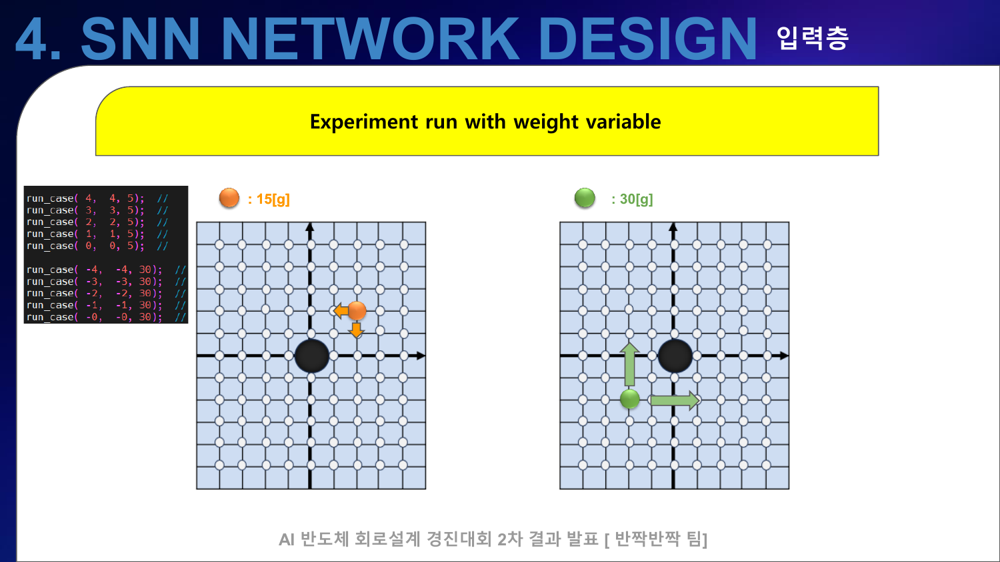
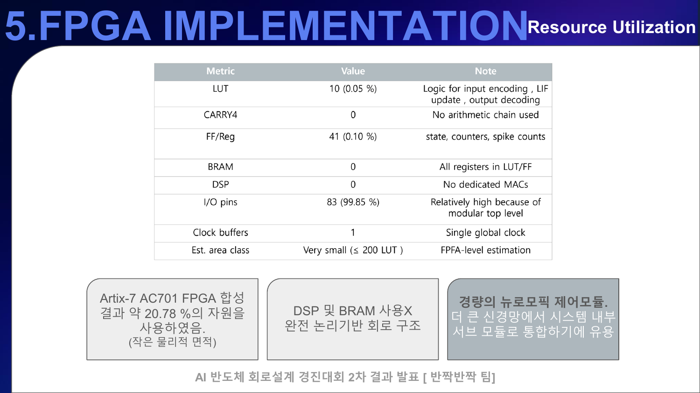
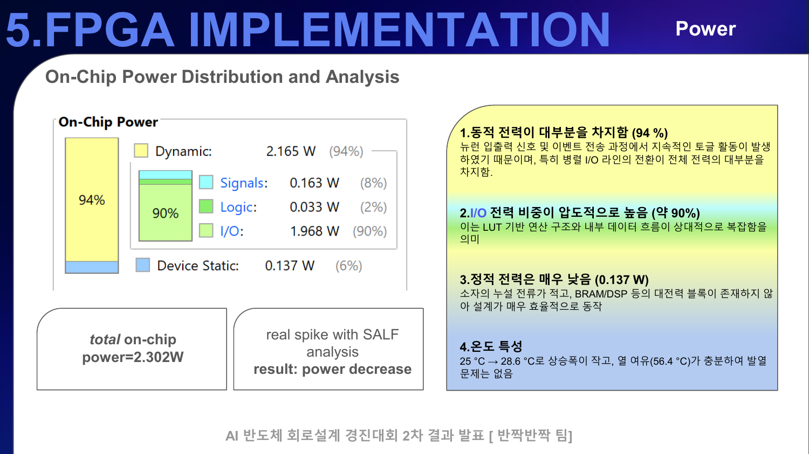

3. 위치만 보던 입력에서 무게까지 반영하기
검증은 한 번에 완성된 네트워크를 주장하는 방식이 아니라, 입력 인코딩을 두 단계로 나눠 비교했다. 실험 1은 위치에 따른 one-shot 입력을 사용했고, 실험 2는 공 무게를 rate encoding에 포함해 같은 좌표라도 입력 spike 밀도가 달라지도록 확장했다.
3.1 Experiment 1 → 2: 입력 표현을 확장했다
| 구분 | 입력 인코딩 | 파라미터 | 확인 목적 |
|---|---|---|---|
| 실험 1 | 위치 기반 one-shot | THRESHOLD 40, LEAK_SHIFT 4 | 좌표와 방향 출력의 기본 연결 확인 |
| 실험 2 | 무게 반영 rate encoding | THRESHOLD 300, LEAK_SHIFT 6 | 무게가 입력 spike 밀도와 제어 반응에 미치는 영향 확인 |

이 비교에서 중요한 것은 “무게를 넣었다”는 기능 추가보다, 새로운 물리 조건이 들어왔을 때 입력 표현과 임계값·누설 파라미터를 함께 다시 조정해야 한다는 점이다. 즉 센서 값 하나를 port에 추가하는 것으로 끝나지 않고 뉴런의 시간 응답 전체가 바뀐다.
3.2 로직 자원과 I/O를 분리해서 읽었다
최종 발표자료의 Artix-7 AC701 합성 요약은 LUT 10, FF/Register 41, BRAM 0, DSP 0을 제시한다. 반면 I/O pin은 83개로 표의 I/O 사용률이 99.85%다. 따라서 발표자료의 “약 20.78% 자원”이라는 한 숫자만 사용하면 작은 로직 코어와 top-level I/O 제약이 섞여 보일 수 있다. 이 글에서는 로직과 I/O를 분리해 공개한다.

3.3 전력의 대부분은 I/O switching 추정치였다
발표자료 기준 total on-chip power 추정치는 2.302W이며, dynamic 2.165W(94%), device static 0.137W(6%)로 정리돼 있다. dynamic 항 중 I/O가 1.968W(90%)를 차지한다. 이를 뉴런 계산 자체의 소비전력으로 해석하기보다, 병렬 top-level I/O가 계속 toggle되는 합성 조건의 영향을 크게 받은 결과로 보는 것이 안전하다.

3.4 내가 맡은 범위
| 영역 | 수행 내용 |
|---|---|
| 프로젝트 운영 | 팀장으로 1·2차 일정, 마일스톤, 문서와 최종 제출 패키지를 관리했다. |
| 기술 조사 | SNN/LIF, ODIN, QuantiSenc 자료를 조사하고 팀 발표자료의 기술 흐름으로 통합했다. |
| 요구사항 해석 | Q&A의 물리 조건을 위치·속도·무게 입력과 네 방향 제어 출력으로 분해했다. |
| 구현 정리 | output-layer의 encoder, LIF, top-level RTL 구조를 정리하고 구현 결과에 반영했다. |
| 결과 전달 | 발표자료, 실험 zip, 코드와 결과 문서를 한 번에 확인할 수 있도록 패키징했다. |
3.5 수상 결과와 다음 개선점
프로젝트는 2025 전국 대학생 AI 반도체 회로 설계 경진대회에서 1등을 수상했다. 다만 포트폴리오에서는 수상보다 설계 범위를 분명히 남기는 것이 중요하다. 현재 코드가 증명하는 것은 output-layer 제어 경로이며, 다음 단계에서는 실제 plant model, sensor noise, actuator dead-zone까지 포함한 closed-loop 검증이 필요하다.
- Python 또는 HDL reference model로 막전위와 spike sequence를 cycle 단위로 자동 비교한다.
- 고정 폭 곱셈의 overflow와 saturation 정책을 명세한다.
- 네 방향 출력의 상호 배타성과 motor pulse shaping을 top-level에서 보장한다.
- 실제 기구부를 연결할 때 위치 오차뿐 아니라 지연과 관성까지 포함해 파라미터를 다시 조정한다.